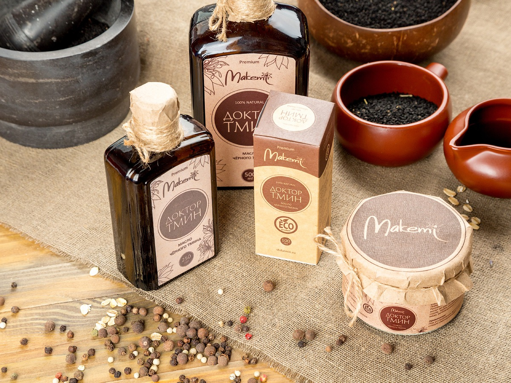
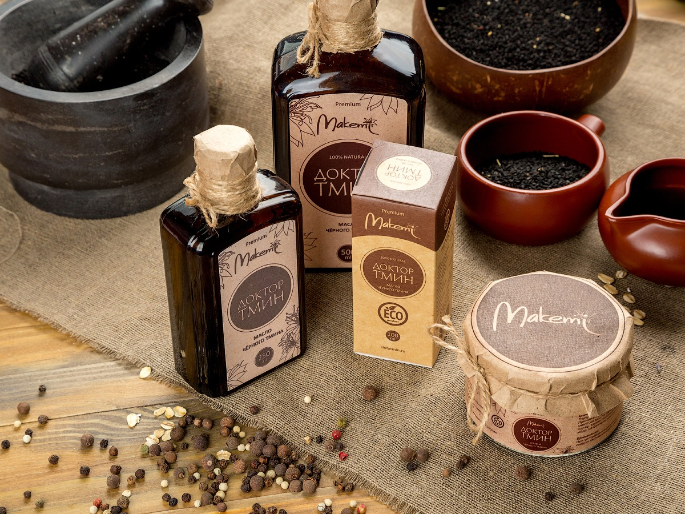
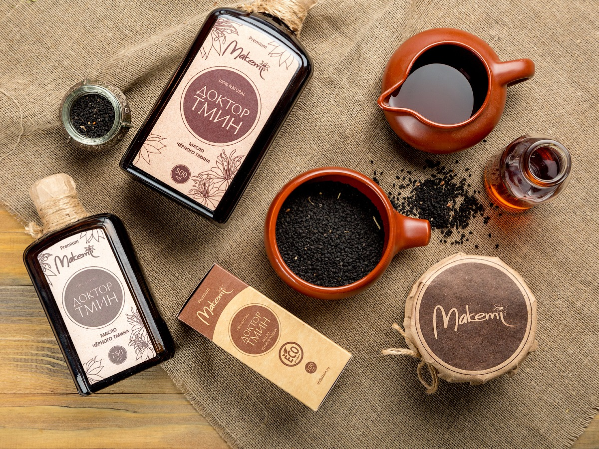

Давно ищете уникальное природное средство для здоровья всей семьи ?

Масло черного тмина «Доктор Тмин» 250 мл. — выгодное решение для небольшой семьи из трех человек! За месячный курс вы всей семьей сможете познакомиться с продуктом, оценить его качество и почувствовать положительные влияние.
Применение семян растения очень разнообразно. Из них можно делать настои и отвары, измельчать до порошкообразного состояния, а затем смешивать с другими ингредиентами. Также их можно жевать целиком или использовать в качестве наружного средства.
Масло черного тмина «Доктор Тмин» 100 мл. — отличное решение для знакомства с продуктом! Если вы давно хотели попробовать масло черного тмина от Makemi и ощутить его действие на себе — то вам идеально подойдет этот вариант.
Масло черного тмина от «Доктор Тмин» в капсулах — это природное средство с противовирусным, иммуностимулирующим, антивоспалительным и противогрибковым свойствами. Подходит как для сезонной профилактики, так и лечения хронических болезней.
Масло черного тмина «Доктор тмин» 500 мл. — наиболее удобное решение для большой семьи! Если у вас несколько детей и вы всей семьей регулярно пьете масло черного тмина, то выгоднее всего брать 500 мл. Солидная большая бутылка масла «Доктор тмин», стоящая на столе не только сэкономит вам деньги, но и будет служить ежедневным напоминанием о приеме масла.
Приятный бонус!
При покупке товара на сумму более 40р - доставка бесплатно!
Масло черного тмина — это универсальное природное средство, которое применяется в следующих случаях:
Болезни органов пищеварения
Препарат способствует улучшению аппетита, активизирует перистальтику желудка и кишечника, нормализует кислотность желудочного сока, восстанавливает кишечную флору, оказывает желчегонное действие, нормализует работу в желчного пузыря и выводит токсины из пищеварительной системы. Крайне полезно для печени, так как его антиоксидантные и гепатопротекторные свойства снимают воспалительные процессы и способствуют исцелению от различных печеночных недугов, в том числе печеночной ишемии, цирроза и гепатитов. Также используется в качестве эффективного противоглистного средства.

Заболевания верхних и нижних дыхательных путей
Препарат оказывает отхаркивающее и бронхорасширяющее действие, разжижает мокроту, а потому он крайне эффективен при кашле и лечении даже таких серьезных заболеваний, как туберкулез и пневмония. Противовоспалительные, противовирусные и бактерицидные свойства масла подавляют воспалительные процессы, которые вызывают бронхит, гайморит, ОРВИ. Кроме того, масло черного тмина в помогает справиться с бронхиальной астмой и дыхательными аллергиями.
Слабость, усталость, апатия
Масло стимулирует выработку простагландина Е1, что оказывает оздоравливающий и тонизирующий эффекты. А фосфолипиды, цинк, магний и витамины группы В улучшают мозговую активность. В книге великого Авиценны «Канон врачебной науки» говорится, что чёрный тмин способствует активации энергии, тем самым помогает перебороть утомление и усталость. Действует общеукрепляюще на иммунную систему, и, что крайне важно, это антиаллерген.

Заболевания сердечно- сосудистой системы
Масло черного тмина имеет свойство расширять сосуды, выводить лишнюю жидкость и понижать кровяное давление. Оно повышает эластичность стенок сосудов, устраняет их ломкость, снижает уровень холестерина и предотвращает появление атеросклероза, препятствует возникновению воспалительных заболеваний сердца и сосудов. В качестве профилактики масло рекомендуется к регулярному применению людям преклонного возраста.

Другие заболевания
Более 200 университетских исследований, проведённых с 1959 года, свидетельствуют о чрезвычайной эффективности традиционного использования черного тмина. Полный список болезней, при которых полезно употребление масла черного тмина вы можете посмотреть в разделе Польза тмина.
Преимущества и выгоды
Полезный продукт — экономия
Благодаря нашим продуктам люди значительно сокращают свои ежемесячные траты на витамины и различные биологические добавки.

Правильное питание
Вы сможете сэкономить время для достижения нужного результата в области снижения веса, либо наборы массы.

Nigela Sativa
По данным последних исследований только эфиопский сорт семян черного тмина Nigella Sativa имеет полезные свойства. Благодаря использованию именно этого сорта наши продукты становятся полезнее.

Первый холодный отжим
Только первый холодный отжим позволяет сохранить все полезные компоненты продукта. Вы платите деньги именно за пользу от продукта, а не просто за масло.

100% концентрат
Мы не разбавляем свое масло с другими маслами — ваша безопасность для нас важнее. Разбавление масла черного тмина другими растительными маслами неизбежно приводит к снижению концентрации полезных микроэлементов, а в некоторых случаях может нанести вред организму.

Условие хранения
Темное стекло наших бутылок соответствует всем международным стандартам в области хранения лекарств, произведено на заводе в Чехии. Вы получаете всегда свежий продукт, без потери полезных компонентов и с большим сроком годности.
Внешний вид
Специально разработанная упаковка наших продуктов делает их отличным вариантом для подарка близким людям!

Доставка по всей Беларуси
Доставка осуществляется белпочтой в любую точку страны.
Вся продукция сертифицирована
Полезные статьи

Почему масло должно быть неразбавленным
Масло черного тмина полезно в своем первозданном, неразбавленном виде — именно на неразбавленное масло рассчитаны все рецепты по его употреблению. Дело в том, что, к сожалению, многие производители в целях экономии стали разбавлять свою продукцию другими растительными маслами, а это приводит к следующим последствиям:
Читать далее
Про сертификат происхождения семян
Существуют разные сорта тмина. Насыщенность семян черного тмина полезными микроэлементами во многом зависит от места его произрастания. Наиболее удачное сочетание климатических условий для выращивания семян тмина это:
Читать далее
Первый холодный отжим
В случае с черным тмином очень важно, чтобы масло было получено именно путем первого холодного отжима — только так можно максимально сохранить его полезные свойства. Дело в том, что при горячем отжиме прессованию предшествует этап обработки семян в жаровнях — измельченные семена с добавлением воды обжаривают при температуре 100-110⁰С, после чего уже отжимают.
Читать далее8 029 127 92 71
Позвоните и наши специалисты проконсультируют вас по вопросам покупки и употребления масла черного тмина!
Доставка и схема работы
Заказ товара на сайте
Подтверждение заказа
Выбор способа доставки

Отправка заказа со склада
Получение заказа
Оплата
Свяжитесь с нами
Cumin
Мы будем рады встретиться с вами лично или через Интернет!
Телефон: 8 029 127 92 71
Почта: cuminby@mail.ru